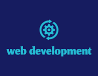

Akpakpan Nsisong Ekwere
About Me

My name is Nsisong Ekwere Akpakpan,a native of Ini Local Government Area a student of BYU-Pathway, currently learning Web development. I am a motivated and curious individual with a strong interest in learning and personal growth. I enjoy taking on new challenges and working hard to achieve my goals. I am known for being responsible, adaptable, and a good team player, always willing to listen and contribute ideas.
Nsisong Ekwere

This course helps me strengthen my understanding of modern web fundamentals. Useful resources include MDN Web Docs, W3Schools, and course assignments that reinforce best practices in semantic HTML, responsive CSS, and JavaScript..